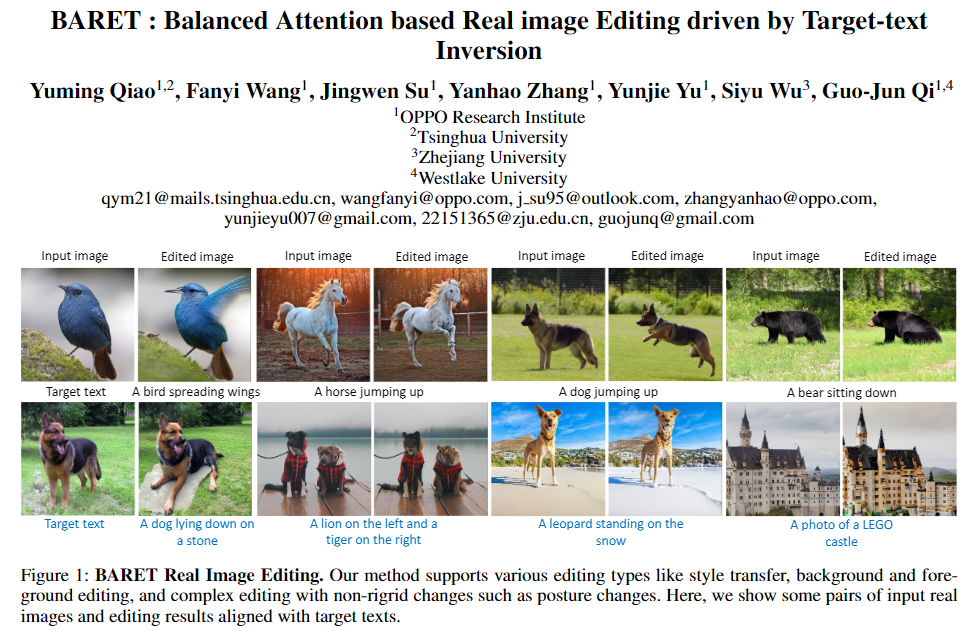

Method
Figure 1. (a) Illustration of our Target-text Inversion Schedule and Progressive transition scheme. (b)Illustration of Balanced Attention Module.
Target-text inversion Schedule first applies DDIM inversion to invert original image \({I}_{org}\) from \({Z}_{0}\sim{Z}_{T}\). Then denoising \({Z}_{T}\) combined with target text condition under guidance scale=7.5. And set intermediate result as \(\{{Z}_{t}^{*}\}_{t=0}^{T-1}\). Based on reconstruction loss between \(\{{Z}_{t}^{*}\}_{t=0}^{T-1}\) and \(\{{Z}_{t}\}_{t=0}^{T-1}\), Tuning target text embedding \({\phi}_{cond}\) to \(\{{\phi}_{opt,t}\}_{t=1}^{T}\) within each timestamp to approximately reconstruct original image \({I}_{rct}\). Progressive linear transition was then adopted between target text embedding \({\phi}_{cond}\) and fine-tuned embedding \(\{{\phi}_{opt,t}\}_{t=1}^{T}\) with interpolation parameter \(\{{\omega}_{t}\}_{t=1}^{T}\) to generate interpolated embedding \(\{{\phi}_{inp,t}\}_{t=1}^{T}\). And transition result \({I}_{inp}\) output by DDIM process with \({Z}_{T}\) and \(\{{\phi}_{inp,t}\}_{t=1}^{T}\) as input will show a better integration of original image and desired non-rigid changes.
Self-attention map \({Q}_{rct}{*}{K}_{rct}^{T}\) can help to preserve the original image characteristics. Cross-attention map \({Q}_{inp}{*}{K}_{{\phi}_{inp}}^{T}\) represents the non-rigid image semantic information, which can optimize the guidance efficiency of target text by dot production with \({V}_{{\phi}_{cond}}\) and \({K}_{rct}\) from reconstruction process latent features and injecting them to editing process. In cross-attention module, getting projected \({Q}_{inp}\) and \({K}_{{\phi}_{inp}}\) from latent features and transition embedding \(\{{\phi}_{inp,t}\}_{t=1}^{T}\) in transition process. Then injecting them to editing process and dot with \({V}_{{\phi}_{cond}}\) from target text embedding \({\phi}_{cond}\).
Method Comparison

Figure 2.We compare SDEdite, Pix2Pix-Zero, MasaCtrl, Null-text inversion, Imagic and SINE to our method. Our BARET can be applied in arbitrary edits (e.g., posture changes, style transfer, background/object editing, and object addition), while preserving characteristics of original image.
paper
|  |
"BARET : Balanced Attention based Real image Editing driven by Target-text Inversion" Yuming Qiao, Fanyi Wang, Jingwen Su, Yanhao Zhang, Yunjie Yu, Siyu Wu, Guo-Jun Qi. AAAI Conference on Artificial Intelligence (AAAI) 2024 [PDF] |
Contact
BARET (qym21@mails.tsinghua.edu.cn)
Citation
@misc{qiao2023baret,
title={BARET : Balanced Attention based Real image Editing driven by Target-text Inversion},
author={Yuming Qiao and Fanyi Wang and Jingwen Su and Yanhao Zhang and Yunjie Yu and Siyu Wu and Guo-Jun Qi},
year={2023},
eprint={2312.05482},
archivePrefix={arXiv},
primaryClass={cs.CV}
}